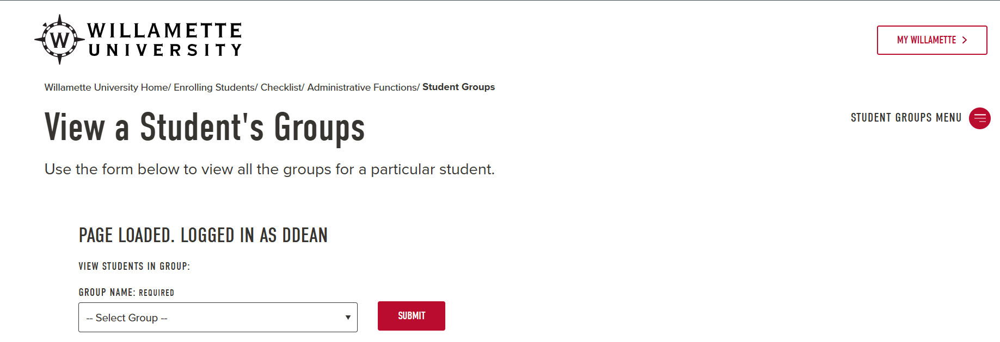
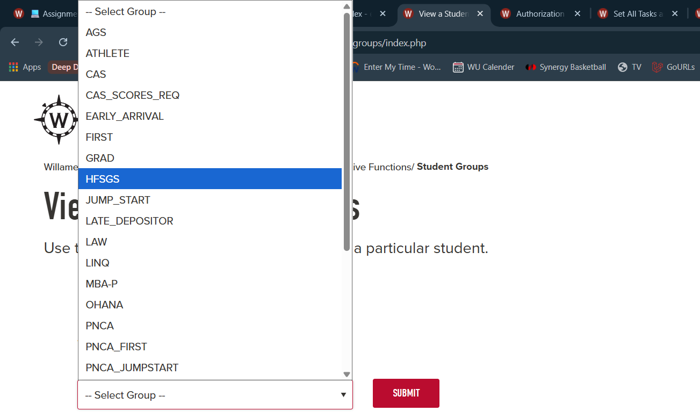
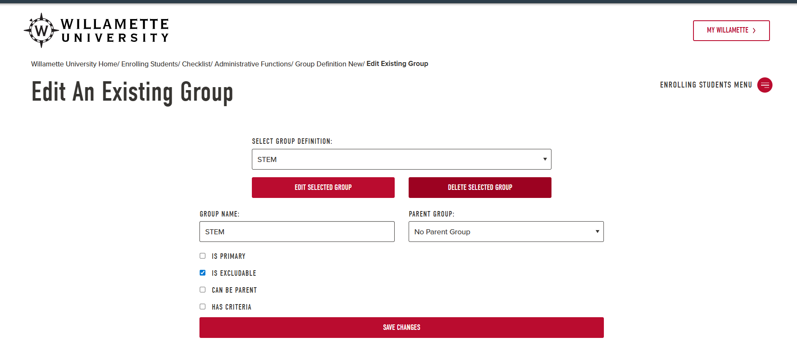
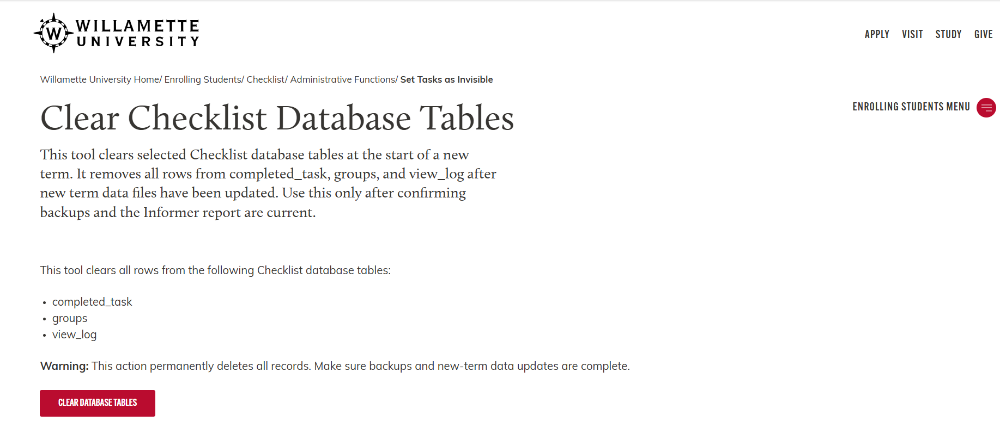

Projects
Libra Ink Tattoos (Client Website)
Overview
Designed and launched a live production website for a tattoo studio to modernize client acquisition, streamline booking requests, and showcase artist work in a structured, conversion-focused layout.
Key Features Delivered
- Implemented an online booking workflow that supports scheduling requests and reduces back-and-forth messaging
- Built a categorized tattoo gallery to showcase portfolio work and increase customer confidence before booking
- Structured services and pricing pages to reduce decision friction and improve inquiry quality
- Designed a mobile-first experience optimized for real-world traffic patterns and fast scanning
- Created clear call-to-action flows across the site to drive bookings, inquiries, and contact submissions
Impact
- Enabled 24/7 booking access so customers can request appointments outside business hours
- Centralized portfolio + services + contact into one system, improving credibility and conversion
- Reduced operational friction by giving customers answers up front (services, pricing, examples of work)
- Improved professional online presence for a growing local business
Checklist Admin + Group Management (Production)
What it is
Internal admin tooling used to manage student groups and render roster membership from criteria-based group definitions.
What I built
- Admin page to select a group and render a roster of members
- Student/group utilities to compute membership from group definitions
- Validation fixes in the group definition workflow to prevent invalid criteria
- Refactoring and cleanup of legacy PHP code paths
- Administrative reset and visibility controls for new-term workflows
Screenshots (sanitized)






Automation + Cron Reporting
What it is
Scheduled reporting scripts that clear and repopulate tables from CSV and database sources.
Impact
- Migrated reporting scripts from daily to hourly schedules to improve data freshness for stakeholders
- Added production-safe execution gates (environment checks and guardrails) to reduce risk during automated runs
- Improved maintainability by removing debug artifacts and tightening script flow for easier handoff
Simple SCM (Rust)
What it is
A simplified source control manager inspired by Git, built to understand how commits, snapshots, and restores work internally.
What I built
- Repository initialization, commit creation, and history tracking
- File snapshot storage to persist versions of tracked files
- Revert/restore functionality with a CLI interface